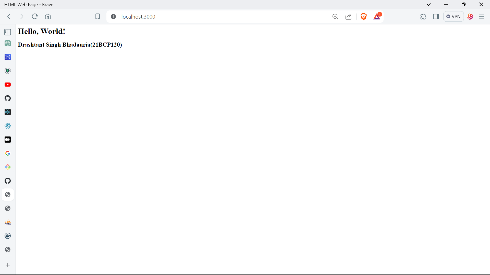
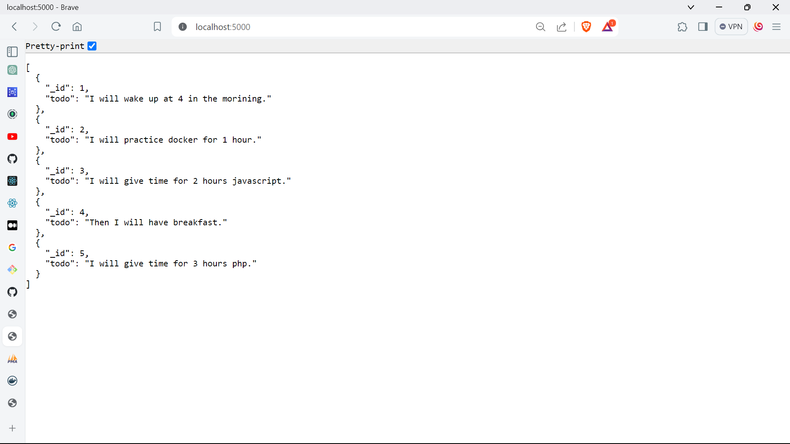
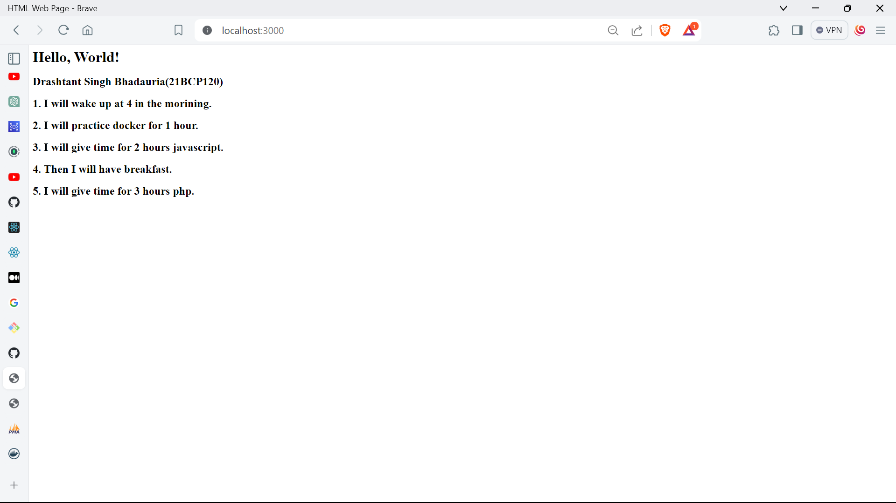
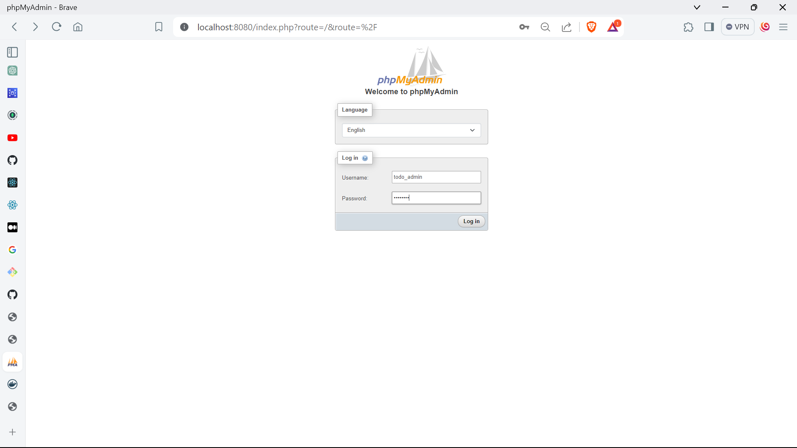
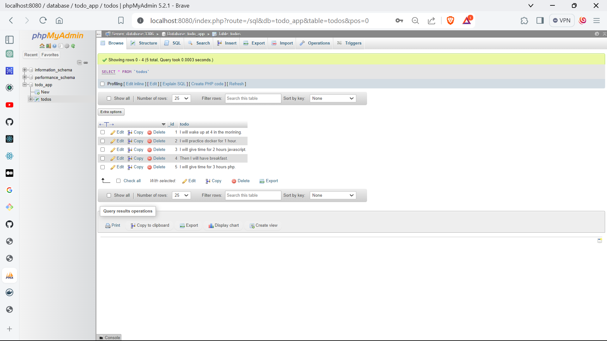
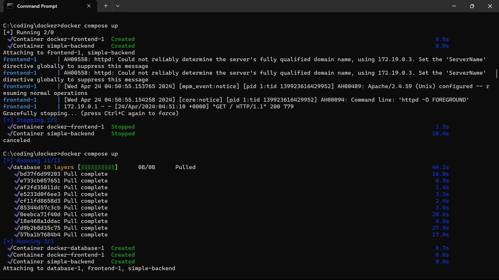

1. Create index.html file inside frontend folder
2. Create docker-compose.yml and add frontend service
3. Create index.php file inside api folder
4. Create Dockerfile
5. Add backend service to docker-compose.yml
6. Update the index.html file to access backend from frontend
7. Create a dump.sql in db folder to add mysql database container
8. Add database service to docker-compose.yml
9. Add browser interface to database using phpmyadmin
 10. Wire up backend API with database container. Add config.php, Database.php and todos.php to api folder.
11. Update index.php to connect all together.
12. Run docker compose up on terminal.
13. Todos application is up and running now.